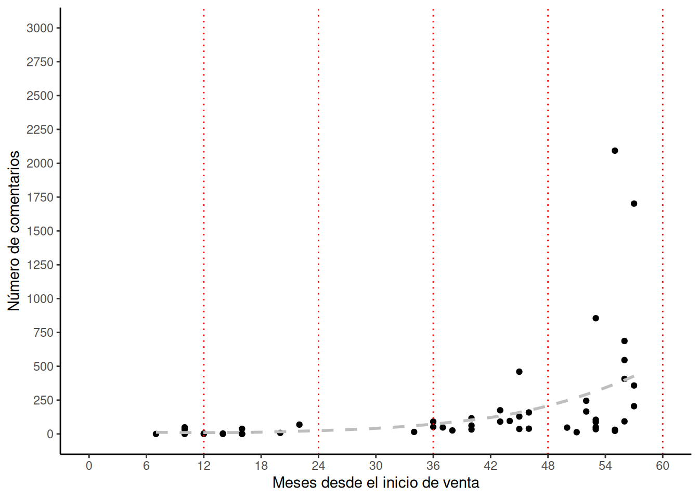

Estudio de café
Reporte de cafe
Café en Amazon
Se consideraron las 85 mejores productos de café en la categoría “Grano Tostado” en Amazon. Se analizaron 82 productos porque 3 no tenían datos suficientes. Los precios de todos los productos se estandarizaron a su valor en pesos ($) por un gramo de café.
PRECIOS
El valor del café va de 0.25 - 64.83 $/gramo. El promedio es de 0.45 $/gramo. Revisa el precio de los productos por marca forma interactiva.
El precio del café asociado al ranking.
Tiempo desde el inicio de venta
Umbral de 5 años que muestra el acumulado de comentarios en el tiempo. Cada linea roja es un año. Los productos suelen superar los 500 comentarios al tercer año.

Ventas